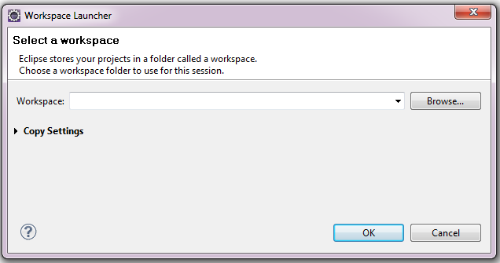
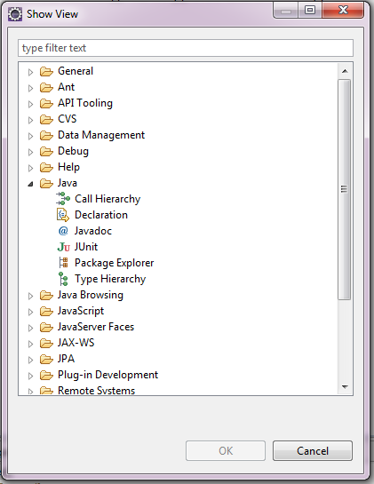
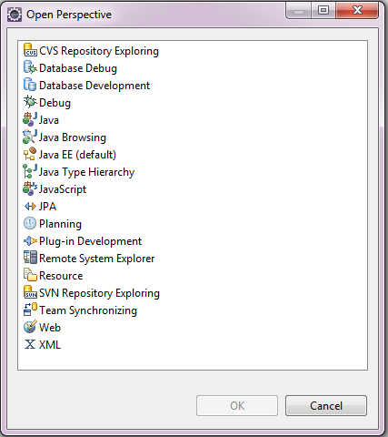
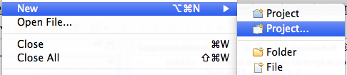
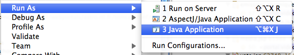

Eclipse
Eclipse est l'IDE java le plus utilisé au monde. Il est extrêmement populaire car il est très complet, modulable et gratuit.
Il dispose d'une myriade de plugins et est aussi la fondation pour des environnements de développement spécialisés.
En téléchargement, il existe plusieurs bundles (eclipse + une sélection de plugin) mais généralement on choisit entre eclipse pour java ee et springsource tool suite.
Workspace
Au démarrage d'éclipse, on peut choisir son workspace.
Le workspace est un répertoire qui sert de base pour tout un jeu de projets.
Il est possible d'avoir plusieurs workspaces et de passer de l'un à l'autre mais cela est rarement nécessaire, les capacités d'organisation au sein d'un workspace étant généralement suffisantes.
Perspectives et vues
Comme n'importe quel IDE, eclipse a sa façon de nommer les différents éléments de son interface.
Le workbench est le conteneur principal, celui qui structure toute l'interface et la navigation.
Les vues et les perspectives sont accessible via le menu Window.
Une vue est un ensemble d'éléments tabulés concernant la même fonctionnalité : explorateur de projet, editeurs, serveurs, explorateur de repository svn...
Une perpective est une distribution particulière d'éditeurs dans le workbench : java, debug, database explorer,
Préférences
Les préférences sont accessibles via le menu Window.
Elles permettent de régler tous les aspects de l'IDE : formattage des sources, environnement java, serveurs...
Plugins
Les plugins sont un élément fondamental d'éclipse. Eclipse est un conteneur de plugin.
Les bundles viennent avec beaucoup de plugins pré installés et le menu Help > Eclipse MarketPlace permet d'en installer de nouveaux.
Un projet java
Afin de tester quelques fonctionnalités d'eclipse, nous allons créer un projet java.
Un projet java se crée via le menu File > New > Project... et en choisissant le type Java > Java Project.
On entre un nom de projet "test" et on clique sur finish.
Un nouveau projet "test" est donc disponible dans le workspace et un répertoire src contiendra les sources java.
Une classe
En faisant un click droit sur le répertoire, on peut créer une classe java Person dans le package edu.ecm.test

On obtient le code suivant :
package edu.ecm.test;
public class Person {
}
Getters et Setters
On ajoute les attributs suivants dans la classe.
private String firstname; private String lastname;
Eclispe est capable de générer les getters et setters pour ces attributs. Il suffit de faire un click droit dans l'éditeur et d'utiliser le menu Source > Generate Getters and Setters...
public String getFirstname() {
return firstname;
}
public void setFirstname(String firstname) {
this.firstname = firstname;
}
public String getLastname() {
return lastname;
}
public void setLastname(String lastname) {
this.lastname = lastname;
}
toString
La méthode toString() est la méthode qui transforme un Object en chaîne de caractères. Elle sert principalement à faire du débuggage car pour la serialisation il existe des mécaniques bidirectionnelles plus complètes.
Eclipse peut également générer cette méthode via le menu contextuel Source > Generate toString()...
@Override
public String toString() {
return "Person [firstname=" + firstname + ", lastname=" + lastname + "]";
}
equals et hashCode
Les méthodes equals et hashCode servent lorsque les objets sont utilisés dans des collections ou des mécaniques à base de tables de hash.
Le contrat et le lien entre ces méthodes dépasse le cadre d'un simple exercice sur eclipse mais une description détaillée et simple est disponible dans le chapitre 3 de effective java
Avec eclipse, il suffit de demander la génération de ces méthodes via Source > Generate hashCode() and equals()...
@Override
public int hashCode() {
final int prime = 31;
int result = 1;
result = prime * result + ((firstname == null) ? 0 : firstname.hashCode());
result = prime * result + ((lastname == null) ? 0 : lastname.hashCode());
return result;
}
@Override
public boolean equals(Object obj) {
if (this == obj)
return true;
if (obj == null)
return false;
if (getClass() != obj.getClass())
return false;
Person other = (Person) obj;
if (firstname == null) {
if (other.firstname != null)
return false;
} else if (!firstname.equals(other.firstname))
return false;
if (lastname == null) {
if (other.lastname != null)
return false;
} else if (!lastname.equals(other.lastname))
return false;
return true;
}
Les capacités de génération d'eclipse vont bien au delà de ces simples exemples. Nous aurions pu faire tout ce code à la main et parfois cela est nécessaire. Cependant, chaque fois que cela est possible, il est bon de pouvoir compter sur l'IDE.
main
On va maintenant créer un classe avec une méthode main.
public class Main {
public static final void main(String[] args) {
}
}
C'est la signature de méthode nécessaire afin qu'elle puisse être appelée en ligne de commande.
En pratique, dans des envirronements managés coté serveur, cette méthode n'est jamais définie.
Afin de la tester un peu on ajout une écriture dans la console.
System.out.println("Hello world !");
On peut lancer cette méthode via le menu contextuel
On peut utiliser notre class Person depuis le main.
Person person = new Person();
person.setFirstname("alex");
person.setLastname("luthor");
System.out.println(person);
Refactoring
Une des grandes forces de java allier à un bon IDE est la capacité à modifier de multiples lignes de code automatiquement en conséquence de la modification manuelle d'un petit élément.
Imaginons que nous souhaitions renommer la classe Person en People.
Un click droit sur la classe et on accède au menu Refactor > Rename... qui permet de faire le changement de nom.
La classe main a été modifiée en fonction.
People person = new People();
person.setFirstname("alex");
person.setLastname("luthor");
System.out.println(person);
Encore une fois, les capacités d'eclipse dépassent amplement cet exemple simple. Le jour ou il faut faire du refactoring en renommant et déplacant de nombreuses classes, un IDE est indispensable.
Navigation
Les capacités de navigation au sein de l'IDE sont nombreuses. Voici quelques façons de trouver ce que l'on cherche :
- control-click sur une référence ou une variable afin d'aller à la définition.
- control-shift-T (Open Type) afin de rechercher une classe via un moteur de recherche.
- click droit sur une classe puis References > Project pour avoir toutes les utilisations de cette classe dans le cadre du projet.